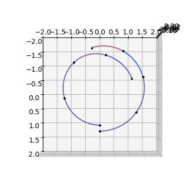
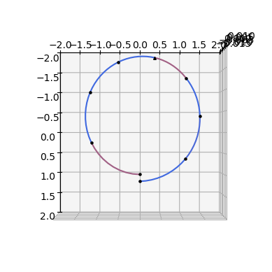
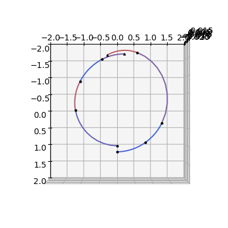
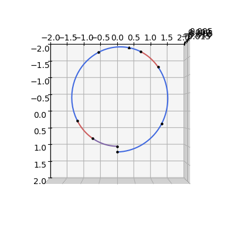
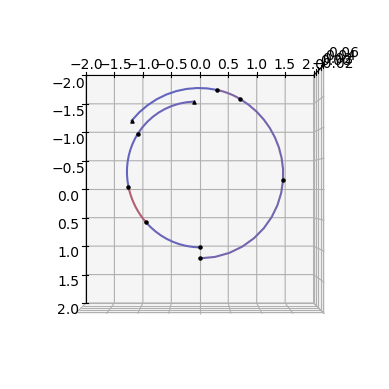
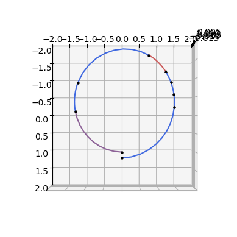
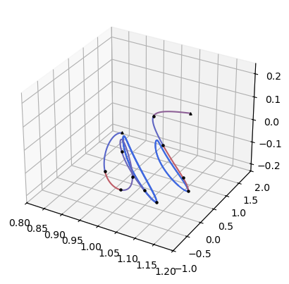
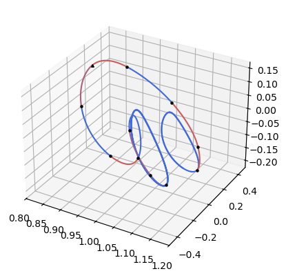
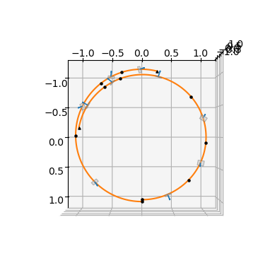
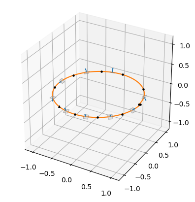

Zero Order Hold: point to point low thrust transfer#
In this tutorial we show the use of the pykep.trajopt.zoh_point2point to find a low-thrust trajectory connecting two fixed points in space.
The underlying transcription, that is the process to transform an Optimal Control Problem (OCP) into a Non Linear Programming Problem (NLP), is based
on pykep’s Zero Order Hold legs (pykep.leg.zoh, pykep.leg.zoh_ss), and was originally conceived as a generalization to the Sims-Flanagan transcription.
According to the encoding of the various segments, the decision vector for this problem will vary.
Fixed Time Grid Transcription#
In the fixed time grid formulation, the total time of flight is divided into N segments of equal duration.
The decision vector for this problem, compatible with [BI20] UDPs, is defined as:
where:
\( m_f \) is the final mass,
\( T_k \) is the thrust magnitude on segment \( k \),
\( (i_{xk}, i_{yk}, i_{zk}) \) define the thrust direction components,
\( tof \) is the total time of flight.
If the grid has \( N \) segments, then each segment duration is:
Thus, all segments have equal duration.
Variable-Length Segment Transcription (Softmax Encoding)#
In the second formulation, the total time of flight is still a decision variable, but the individual segment durations are also optimization variables.
Instead of optimizing segment durations directly (which would require enforcing positivity and a sum constraint), we introduce a softmax encoding. The decision vector becomes:
where:
\( w_k \) is the weight associated with segment \( k \),
\( tof \) is the total time of flight,
\( N \) is the number of segments.
Relationship Between Weights and Segment Duration#
The segment durations are obtained by applying the softmax transformation to the weights:
Each \(\alpha_k\) satisfies:
\(\alpha_k > 0\)
\(\sum_{k=0}^{N-1} \alpha_k = 1\)
The duration of segment \(k\) is then:
Therefore,
Each weight \( w_k \) controls the relative duration of segment \( k \).
Properties:
Increasing \( w_k \) increases \( \Delta t_k \) relative to the other segments.
If all weights are equal, all segments have equal duration.
Positivity and the sum-to-\( tof \) constraint are automatically enforced.
The optimizer can smoothly redistribute time among segments.
Why Use Softmax Encoding?#
The softmax-based variable segment formulation:
Avoids explicit equality constraints,
Improves feasibility handling,
Allows adaptive time distribution,
Should improve convergence for difficult low-thrust problems.
However, it introduces stronger nonlinear coupling between variables and may affect conditioning of the optimization problem.
Let’s now delve into both… First we setup a problem. Here we use the Keplerian (Cartesian) dynamics.
First some imports …
import pykep as pk
import numpy as np
import pygmo as pg
import pygmo_plugins_nonfree as ppnf
… and the SQP solvers setup
#library_snopt72 = "/usr/local/lib/libsnopt7_c.so"
library_snopt72 = "/Users/dario.izzo/opt/libsnopt7_c.dylib"
snopt72 = ppnf.snopt7(library=library_snopt72, minor_version=2, screen_output=False)
snopt72.set_integer_option("Major iterations limit", 2000)
snopt72.set_integer_option("Iterations limit", 20000)
snopt72.set_numeric_option("Major optimality tolerance", 1e-10)
snopt72.set_numeric_option("Major feasibility tolerance", 1e-12)
slsqp = pg.nlopt("slsqp")
slsqp.xtol_abs=1e-10
slsqp.xtol_rel=1e-10
slsqp.ftol_abs=1e-10
algo = pg.algorithm(snopt72)
We can now setup the problem.
# Physical parameters
max_thrust = 0.22 # N
veff = 3000. * pk.G0 # m/s
mu = pk.MU_SUN # m^3/s^2
# Initial state (Cartesian)
ms = 1000.0 # kg
rs = np.array([1.2, 0.0, -0.01]) * pk.AU
vs = np.array([0.01, 1, -0.01]) * pk.EARTH_VELOCITY
# Final state (Cartesian)
rf = np.array([1, 0.0, -0.0]) * pk.AU
vf = np.array([0.01, 1.1, -0.0]) * pk.EARTH_VELOCITY
Then we instantiate the ZOH Taylor integrators, these need to be set in nondimensional units so we define those too!
# Non dimensional units
L = pk.AU
MU = mu # (central body mu must be 1 in these units as a requirement of the ZOH integrator used)
TIME = np.sqrt(L**3 / MU)
V = L / TIME
ACC = V / TIME
MASS = ms
F = MASS * ACC
# Non dimensional problem data
ms_nd = ms / MASS
rs_nd = [it / L for it in rs]
vs_nd = [it / V for it in vs]
rf_nd = [it / L for it in rf]
vf_nd = [it / V for it in vf]
# Instantiating the ZOH integrators
# Tolerances used in the numerical integration
# Low tolerances result in higher speed (the needed tolerance depends on the orbital regime)
tol = 1e-10
tol_var = 1e-6
# We instantiate ZOH Taylor integrators for Keplerian dynamics.
ta = pk.ta.get_zoh_kep(tol)
ta_var = pk.ta.get_zoh_kep_var(tol_var)
# We set the Taylor integrator parameters
veff_nd = veff / V
ta.pars[4] = 1.0 / veff_nd
ta_var.pars[4] = 1.0 / veff_nd
Using a uniform time grid#
# Throttles and tof
nseg = 8
throttles = np.random.uniform(-1, 1, size=(nseg * 3))
tof = 2 * np.pi * np.sqrt(pk.AU**3 / pk.MU_SUN) / 4
udp = pk.trajopt.zoh_point2point(
states=rs_nd + vs_nd,
statef=rf_nd + vf_nd,
ms=ms_nd,
max_thrust=max_thrust / F,
tof_bounds=[600 * pk.DAY2SEC / TIME, 700 * pk.DAY2SEC / TIME],
mf_bounds=[0.2, 1],
nseg=nseg,
cut=0.6,
tas=[ta, ta_var],
time_encoding='uniform'
)
prob = pg.problem(udp)
prob.c_tol = 1e-6
Let’s check the correctness of the analytical gradients:
pop = pg.population(prob, 1)
(pg.estimate_gradient_h(udp.fitness, pop.champion_x, dx=1e-6)-udp.gradient(pop.champion_x)).min(), (pg.estimate_gradient_h(udp.fitness, pop.champion_x, dx=1e-6)-udp.gradient(pop.champion_x)).max()
(-6.2522041988088972e-09, 5.6767748279895613e-09)
x = pop.champion_x
ax = udp.plot(x=x,N=10, c='k', s=5)
ax.set_xlim(-2.0,2.0)
ax.set_ylim(-2.0,2.0)
ax.view_init(90,0)

pop = pg.population(prob, 1)
pop = algo.evolve(pop)
print(prob.feasibility_f(pop.champion_f))
print("Final mass:", pop.champion_x[0] * MASS)
print("Final tof:", pop.champion_x[4*nseg+1] * TIME * pk.SEC2DAY)
---------------------------------------------------------------------------
ValueError Traceback (most recent call last)
Cell In[8], line 2
1 pop = pg.population(prob, 1)
----> 2 pop = algo.evolve(pop)
3 print(prob.feasibility_f(pop.champion_f))
4 print("Final mass:", pop.champion_x[0] * MASS)
5 print("Final tof:", pop.champion_x[4*nseg+1] * TIME * pk.SEC2DAY)
ValueError:
function: evolve_version
where: /home/conda/feedstock_root/build_artifacts/pygmo_plugins_nonfree_1773729372502/work/src/snopt7.cpp, 603
what:
An error occurred while loading the snopt7_c library at run-time. This is typically caused by one of the following
reasons:
- The file declared to be the snopt7_c library, i.e. /Users/dario.izzo/opt/libsnopt7_c.dylib, is not a shared library containing the necessary C interface symbols (is the file path really pointing to
a valid shared library?)
- The library is found and it does contain the C interface symbols, but it needs linking to some additional libraries that are not found
at run-time.
We report the exact text of the original exception thrown:
function: evolve_version
where: /home/conda/feedstock_root/build_artifacts/pygmo_plugins_nonfree_1773729372502/work/src/snopt7.cpp, 553
what: The snopt7_c library path was constructed to be: /Users/dario.izzo/opt/libsnopt7_c.dylib and it does not appear to be a file
x = pop.champion_x
ax = udp.plot(x=x, N=10, s=5, c='k')
ax.set_xlim(-2.0,2.0)
ax.set_ylim(-2.0,2.0)
ax.view_init(90,0)

Using the softmax encoding:#
# Throttles and tof
nseg = 8
udp = pk.trajopt.zoh_point2point(
states=rs_nd + vs_nd,
statef=rf_nd + vf_nd,
ms=ms_nd,
max_thrust=max_thrust / F,
tof_bounds=[600 * pk.DAY2SEC / TIME, 700 * pk.DAY2SEC / TIME],
mf_bounds=[0.2, 1],
nseg=nseg,
cut=0.6,
tas=[ta, ta_var],
time_encoding='softmax'
)
prob = pg.problem(udp)
prob.c_tol = 1e-6
pop = pg.population(prob, 1)
Let’s check the correctness of the analytical gradients
(pg.estimate_gradient_h(udp.fitness, pop.champion_x, dx=1e-6)-udp.gradient(pop.champion_x)).min(), (pg.estimate_gradient_h(udp.fitness, pop.champion_x, dx=1e-6)-udp.gradient(pop.champion_x)).max()
(-4.8853863454656477e-09, 6.8031940324286833e-09)
x = pop.champion_x
ax = udp.plot(x=x,N=10, s=5, c='k')
ax.set_xlim(-2.0,2.0)
ax.set_ylim(-2.0,2.0)
ax.view_init(90,0)

pop = algo.evolve(pop)
print(prob.feasibility_f(pop.champion_f))
print("Final mass:", pop.champion_x[0] * MASS)
print("Final tof:", pop.champion_x[4*nseg+1] * TIME * pk.SEC2DAY)
True
Final mass: 928.818877582
Final tof: 623.147255258
x = pop.champion_x
ax = udp.plot(x=x, N=20, s=5, c='k')
ax.set_xlim(-2.0,2.0)
ax.set_ylim(-2.0,2.0)
ax.view_init(90,0)

A different dynamics: equinoctial elements#
The pykep.trajopt.zoh_point2point internally makes use of a pykep.leg.zoh which is will make use of a generic dynamics defined in the numerical integrators used and passed by the user via the kwarg tas.
This is a rather powerful setup as it allows to use the very same ZOH transcription over a generic dynamics.
In the initial part of this notebook we have used a Cartesian dynamics. We now show how to instantiate the very same optimization problem, but in modified equinoctial elements.
# We instantiate ZOH Taylor integrators for the dynamics in equinoctial elements.
ta_eq = pk.ta.get_zoh_eq(tol)
ta_eq_var = pk.ta.get_zoh_eq_var(tol_var)
# We set the Taylor integrator parameters
veff_nd = veff / V
ta_eq.pars[4] = 1.0 / veff_nd
ta_eq_var.pars[4] = 1.0 / veff_nd
We use the softmax encoding allowing for variable length segments. Note that we have only changed the dynamics and the corresponding initial conditions.
# Throttles and tof
nseg = 8
states=pk.ic2mee([rs_nd, vs_nd], 1.)
statef=pk.ic2mee([rf_nd ,vf_nd], 1.)
statef[-1]+=2*np.pi
udp = pk.trajopt.zoh_point2point(
states=states,
statef=statef,
ms=ms_nd,
max_thrust=max_thrust / F,
tof_bounds=[600 * pk.DAY2SEC / TIME, 700 * pk.DAY2SEC / TIME],
mf_bounds=[0.2, 1],
nseg=nseg,
cut=0.6,
tas=[ta_eq, ta_eq_var],
time_encoding='softmax'
)
prob = pg.problem(udp)
prob.c_tol = 1e-6
pop = pg.population(prob, 1)
Let’s check the correctness of the analytical gradients (now using equinoctial elements)
(pg.estimate_gradient_h(udp.fitness, pop.champion_x, dx=1e-6)-udp.gradient(pop.champion_x)).min(), (pg.estimate_gradient_h(udp.fitness, pop.champion_x, dx=1e-6)-udp.gradient(pop.champion_x)).max()
(-4.8828083312746351e-09, 4.8903709241876481e-09)
x = pop.champion_x
ax = udp.plot(x=x,N=10, to_cartesian=lambda x: np.array(pk.mee2ic(x[:-1], mu = 1.)).flatten(), c='k', s=5)
ax.set_xlim(-2.0,2.0)
ax.set_ylim(-2.0,2.0)
ax.view_init(90,0)

pop = algo.evolve(pop)
print(prob.feasibility_f(pop.champion_f))
print("Final mass:", pop.champion_x[0] * MASS)
print("Final tof:", pop.champion_x[4*nseg+1] * TIME * pk.SEC2DAY)
True
Final mass: 929.422255631
Final tof: 622.584988339
x = pop.champion_x
ax = udp.plot(x=x,N=10, to_cartesian=lambda x: np.array(pk.mee2ic(x[:-1], mu = 1.)).flatten(), s=5, c='k')
ax.set_xlim(-2.0,2.0)
ax.set_ylim(-2.0,2.0)
ax.view_init(90,0)

A different dynamics: CR3BP#
We now show how to instantiate the very same optimization problem type (i.e. a point to point low-thrust problem) but in the CR3BP dynamics.
# Instantiating the ZOH integrators
# Tolerances used in the numerical integration
# Low tolerances result in higher speed (the needed tolerance depends on the orbit)
tol = 1e-16
tol_var = 1e-6
# We instantiate ZOH Taylor integrators for the CR3BP dynamics.
ta_cr3bp = pk.ta.get_zoh_cr3bp(tol)
ta_cr3bp_var = pk.ta.get_zoh_cr3bp_var(tol_var)
# We set the Taylor integrators parameters (veff and mu in this case)
veff_nd = 11.56499372183432
mu_cr3bp = 0.01215058560962404
ta_cr3bp.pars[4] = 1.0 / veff_nd
ta_cr3bp_var.pars[4] = 1.0 / veff_nd
ta_cr3bp.pars[5] = mu_cr3bp
ta_cr3bp_var.pars[5] = mu_cr3bp
We are ready to instantiate a pykep.trajopt.zoh_point2point representing this gym problem:
nseg=10
udp = pk.trajopt.zoh_point2point(
states=[1.0809931218390707, 0.0, -0.20235953267405354, 0.0, -0.19895001215078018, 0.0], # mass is excluded in the states kwarg definition
statef=[1.1648780946517576, 0.0, -0.11145303634437023, 0.0, -0.20191923237095796, 0.0], # mass is excluded in the states kwarg definition
ms=1., # initial mass
max_thrust=0.3010999584011414,
tof_bounds=[5., 5.],
mf_bounds=[0.8, 1],
nseg=nseg,
cut=0.6,
tas=[ta_cr3bp, ta_cr3bp_var],
time_encoding='uniform'
)
prob = pg.problem(udp)
prob.c_tol = 1e-6
pop = pg.population(prob, 1)
# For quick plotting purposes we create a decision vector corresponding to a ballistic leg
x_ballistic = np.array([1.]+[0.0,0.0,0.0,1.]*nseg+[15.3]+[0.1]*nseg)
We check that the analytical gradients are correct …
(pg.estimate_gradient_h(udp.fitness, pop.champion_x, dx=1e-6)-udp.gradient(pop.champion_x)).min(), (pg.estimate_gradient_h(udp.fitness, pop.champion_x, dx=1e-6)-udp.gradient(pop.champion_x)).max()
(-2.3391790620053143e-06, 1.5331602894741447e-06)
Plot a random chromosome
ax = udp.plot(x=x_ballistic,N=100, mark_segments=False, mark_mismatch=False)
udp.plot(x=pop.champion_x,N=100, mark_segments=True, ax=ax, s=5, c='k')
ax.set_xlim(0.8,1.2)
ax.set_ylim(-1.0,2.0)
(-1.0, 2.0)

Optimize.
pop = pg.population(prob, 1)
pop = algo.evolve(pop)
pop = algo.evolve(pop) # to refine a few final steps its sometime useful
print(prob.feasibility_f(pop.champion_f))
print("Final mass (nd):", pop.champion_x[0])
print("Final tof (nd):", pop.champion_x[4*nseg+1])
True
Final mass (nd): 0.928212868042
Final tof (nd): 5.0
ax = udp.plot(x=x_ballistic,N=100, mark_segments=False, mark_mismatch=False)
udp.plot(x=pop.champion_x,N=100, mark_segments=True, ax=ax, s=5, c='k')
ax.set_xlim(0.8,1.2)
ax.set_ylim(-0.5,0.5)
(-0.5, 0.5)

A different dynamics: Solar Sailing#
The dynamics of solar sailing is radically different than the low-thrust one as the spacecraft mass is no longer a state variable for the spacecarft and is constant. Besides, the controls are the sail clock and cone angles, which have a smaller dimensionality than the 3D low-thrust vector. For this reason and API development reasons, in pykep we provide a separate dedicated Solar Sailing trajectory leg in the class pykep.leg.zoh_ss, showcased in a corresponding leg tutorial.
This also means that we need an added class to instantiate a point to point transfer making use of this dynamics and we cannot use pykep.trajopt.zoh_point2point as we did above when the dynamics was equinoctial parameters or the CR3BP.
# Instantiating the ZOH integrators
# Tolerances used in the numerical integration
# Low tolerances result in higher speed (the needed tolerance depends on the orbit)
tol = 1e-10
tol_var = 1e-6
# We instantiate ZOH Taylor integrators for the CR3BP dynamics.
ta_ss = pk.ta.get_zoh_ss(tol)
ta_ss_var = pk.ta.get_zoh_ss_var(tol_var)
# We set the Taylor integrators parameters (c_sail in this case)
# c_sail is 2 C A / M. (C is the solar flux at reference distance L, A is the area, M the mass)
C = 5.4026*1E-6 # N/m^2 (Sun)
A = 120*120 # m^2
M = 500 # Kg
c_sail = 2 * C * A / M # m/s^2
MU = pk.MU_SUN
L = pk.AU
TIME = np.sqrt(L**3/MU)
c_sail_nd = c_sail / (L/TIME/TIME)
ta_ss.pars[2] = c_sail_nd
ta_ss_var.pars[2] = c_sail_nd
nseg=10
udp = pk.trajopt.zoh_ss_point2point(
states=[1.,0.,0.,0.,1.,0.],
statef=[1.03,0.,0.,0.,1.,0.],
tof_bounds=[0.1, 12.],
nseg=nseg,
cut=0.6,
tas=[ta_ss, ta_ss_var],
time_encoding='softmax'
)
prob = pg.problem(udp)
prob.c_tol = 1e-6
pop = pg.population(prob, 1)
(pg.estimate_gradient_h(udp.fitness, pop.champion_x, dx=1e-6)-udp.gradient(pop.champion_x)).min(), (pg.estimate_gradient_h(udp.fitness, pop.champion_x, dx=1e-6)-udp.gradient(pop.champion_x)).max()
(-8.1309493582537584e-09, 3.6341662734695745e-09)
ax = udp.plot(x=pop.champion_x,N=100, mark_segments=True, s=5, c='k', plot_sail=True)
ax.view_init(90,0)

pop = pg.population(prob, 1)
pop = algo.evolve(pop)
pop = algo.evolve(pop) # to refine a few final steps its sometime useful
print(prob.feasibility_f(pop.champion_f))
print("Final tof (nd):", pop.champion_x[2*nseg])
True
Final tof (nd): 6.50664557209
ax = udp.plot(x=pop.champion_x,N=100, mark_segments=True, s=5, c='k')
